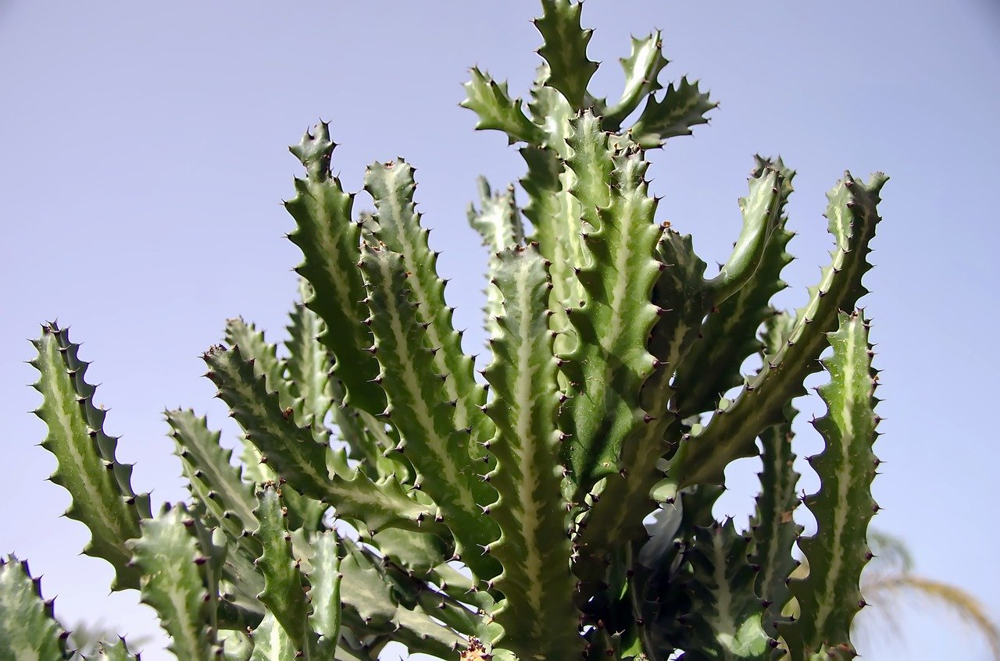
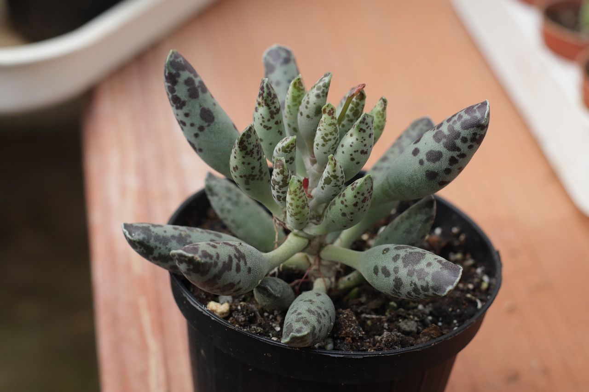

Types
There are hundreds of different types of succulents and cacti, but these are some of my favorites.

Acanthocereus tetragonus, Fairy Castle Cactus
According to, Succulents and Sunshine, the Fairy Castle Cactus grows branches that clump together vertically, forming the turrets of a “fairy castle.” It grows well indoors, and is perfect for beginners.

Adromischus maculatus, ‘Calico Hearts’
The Calico Hearts succulent is perfect for beginners, requiring minimal care, it will do fine indoors in bright light.